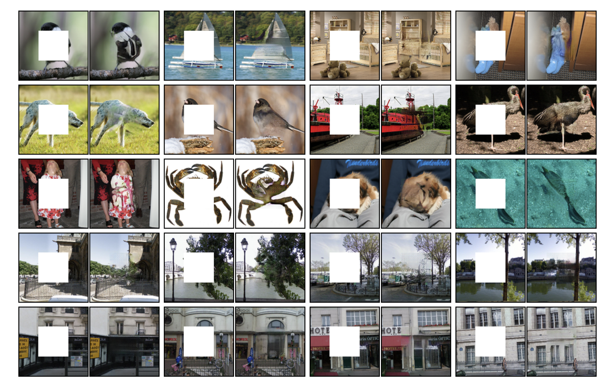
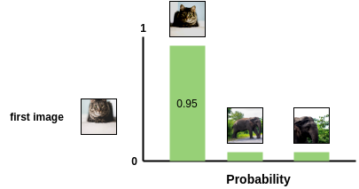
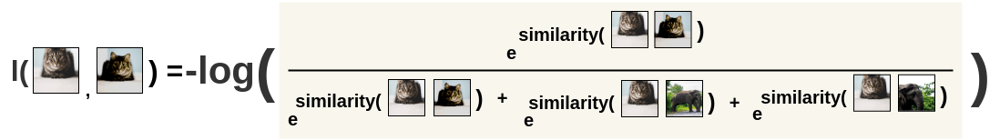
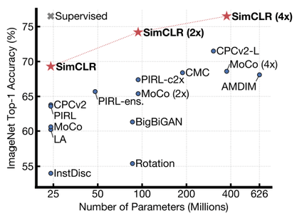
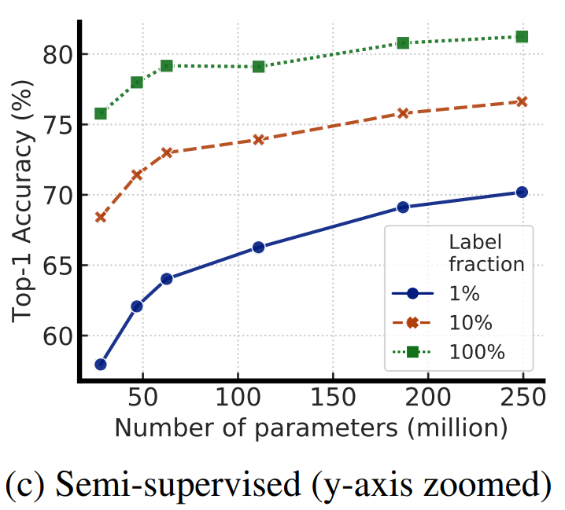

Neurocomputing
Contrastive learning
Self-supervised learning
- Pretext tasks can be easily and automatically derived from the existing data, such as predicting the future of a signal.

Generative models
- Generative models (AE, GAN) are somehow self-supervised: reconstructing an image is just a pretext to learn a good latent representation, or to learn to remove noise (denoising AE).


word2vec
- word2vec is trained using the pretext task of predicting the surrounding words in a sentence.

Masked word prediction
- Masking words is obviously self-supervised.

Next sentence prediction
- Next sentence prediction too.

Next word prediction

Context encoder
As with denoising autoencoders, context encoders can be trained to generate the contents of an arbitrary image region based on its surroundings.
The loss function is the sum of the reconstruction loss and an adversarial loss (as in GANs).
Useful for in-paintings. The encoder part can be fine-tuned on classification tasks.


SimCLR
- The NT-Xent (Normalized Temperature-Scaled Cross-Entropy Loss) loss function allows to achieve this. It is a variant of the Noise Contrastive Estimator (NCE) loss.
- Let’s first transform the cosine similarity between two images i and j into a probability using a softmax:
s(i, j) = \dfrac{\exp \dfrac{\cos(\mathbf{z}_i, \mathbf{z}_j)}{\tau}}{\sum_{k \neq i} \exp \dfrac{\cos(\mathbf{z}_i, \mathbf{z}_k)}{\tau}}

- For a positive pair, this softmax represents the probability that the second augmented cat is closer to the first one, compared to the other negative images in the minibatch:

SimCLR
- By maximizing this probability for a positive pair, we not only maximize the similarity between them, but we also minimize the similarity with the negative pairs, as they appear at the denominator!
- In practice, we will minimize the negative log-likelihood:
l(i, j) = - \log s(i, j)

SimCLR
- After performing contrastive learning on the training set of ImageNet (or bigger), the Resnet-50 encoder can be used to:
- linearly predict the labels using logistic regression.
- fine-tune on 1% of the training data.
- A simple logistic regression on the learned representations is already on-par with fully supervised models.


